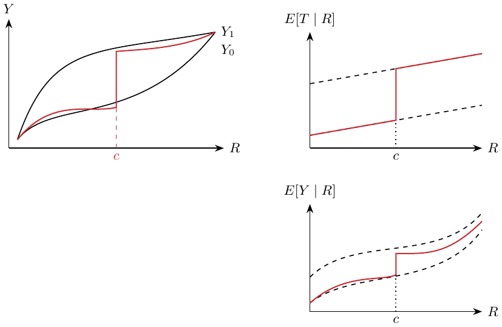

Chapter 16. Regression discontinuity design
A discontinuity: what effect does it reveal? Let \(R\) be the running variable, with treatment assigned discontinuously at cutoff \(c\): \[D_i=\mathbf1\{R_i>c\}.\] Below \(c\) treatment is zero; above it treatment is one. Thus \(Y_1\) is observed for \(R>c\), and \(Y_0\) for \(R<c\). The figure draws smooth potential-outcome curves \(Y_1,Y_0\), with the observed curve switching from \(Y_0\) to \(Y_1\) at \(c\). The example plots age against all deaths / motor-vehicle deaths / suicide, looking for a discontinuity.
If both potential-outcome means are continuous at the cutoff and there is support on both sides, their left and right limits agree, e.g. \[\lim_{r\to c^-}E[Y_{1i}\mid R_i=r]=\lim_{r\to c^+}E[Y_{1i}\mid R_i=r].\] The discontinuity in observed outcomes therefore identifies \[\begin{aligned} &\lim_{r\to c^+}E[Y_i\mid R_i=r]-\lim_{r\to c^-}E[Y_i\mid R_i=r]\\ &\quad=\lim_{r\to c^+}E[Y_{1i}\mid R_i=r]-\lim_{r\to c^-}E[Y_{0i}\mid R_i=r]\\ &\quad=E[Y_{1i}-Y_{0i}\mid R_i=c]. \end{aligned}\] This is the ATE at the cutoff. My intuition: comparisons very near the cutoff resemble a local randomized experiment. The continuity argument alone does not assert literal random assignment.
Center the running variable, \(r_i=R_i-c\), and use different slopes on either side: \[y_i=\beta_0+\beta_1r_i+\beta_2\mathbf1\{r_i>0\}+\beta_3\mathbf1\{r_i>0\}r_i.\] The low-side line is the first part; the high-side line adds the indicator and interaction. Then \(\beta_0\) with the left limit, \(\beta_0+\beta_2\) with the right limit, and \(\beta_2\) with the cutoff effect. Standard errors assess significance.
Kernel weighting.
RDD relies heavily on linear regression’s extrapolation. A fit can focus too much on distant observations and fit badly at the cutoff. Give observations nearer the threshold higher weight. The triangular kernel is \[K(R,c,h)=\mathbf1\{|R-c|<h\}\left(1-\frac{|R-c|}{h}\right).\] The indicator keeps only observations within \(c\pm h\); the second factor decreases as distance from \(c\) increases. Use WLS, weighted least squares.
Fuzzy RDD.
At the cutoff, treatment need not switch deterministically: its probability jumps. Use cutoff crossing as an IV. With local exclusion and exogeneity, a nonzero first stage, continuity and monotonicity \(T_{1i}\ge T_{0i}\), the outcome jump equals the first-stage jump times the complier effect. The Wald ratio is \[\frac{\lim_{r\to c^+}E[Y_i\mid R_i=r]-\lim_{r\to c^-}E[Y_i\mid R_i=r]} {\lim_{r\to c^+}E[T_i\mid R_i=r]-\lim_{r\to c^-}E[T_i\mid R_i=r]} =E[Y_{1i}-Y_{0i}\mid T_{1i}>T_{0i},R_i=c].\]
A large \(p\)-value means the data do not provide strong evidence against the tested null; it does not establish a small effect. Inspect the estimate and its interval together. The McCrary test checks for a discontinuity in the running-variable density at the cutoff, as a diagnostic for possible manipulation. It does not test all RD assumptions.

Sharp RD (left); fuzzy RD treatment and outcome jumps (right). Black curves show potential relations and red curves the observed discontinuities.